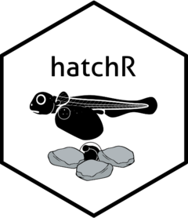

Package index
-
check_continuous() - Check if the dates in a data frame are continuous.
-
crooked_river - Example dataset: Crooked River, Idaho
-
fit_model() - Fit B&M model 2 to new data using
stats::nls()
-
idaho - Central Idaho Water Temperature Data
-
model_select() - Select a development model structure
-
model_table - Table of phenology models
-
plot_check_temp() - Visual check of imported temperature data
-
plot_phenology() - Visualize fish phenology
-
predict_phenology() - Predict phenology of fish
-
summarize_temp() - Summarize temperature data to daily values
-
woody_island - Example dataset: Woody Island, Lake Iliamna, Alaska